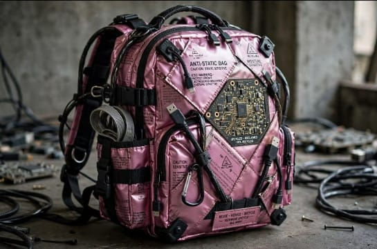

Tas Ransel dari Anti-Static Bag Bekas

Ulasan Produk: Tas ransel ramah lingkungan yang dibuat dari anti-static bag bekas komputer. Dilengkapi dengan resleting dan tali dari kabel bekas, produk ini tidak hanya berfungsi untuk membawa barang atau buku dengan aman, tetapi juga memiliki nilai estetika techwear yang unik dan futuristik.
- Alat dan Bahan
- Alat
- Mesin jahit (1 buah)
- Bahan
- Anti-static bag bekas (1 buah)
- Kabel bekas (1 buah)
- Resleting bekas (1 buah)
- Lem kuat (1 buah)
- Alat
- Langkah kerja
- Kumpulkan beberapa anti-static bag ukuran besar.
- Gunting dan satukan menjadi lembaran besar.
- Jahit lembaran tersebut menjadi bentuk tas ransel.
- Gunakan kabel bekas sebagai hiasan tali dan aksen resleting.
- Pasang furing dari kain bekas di bagian dalam tas.
- Estimasi Biaya
Rincian Biaya Alat
No Nama Alat Biaya 1 Mesin jahit Rp0 Total Biaya Alat Rp0 Rincian Biaya Bahan
No Nama Bahan Biaya 1 Anti-static bag bekas Rp55.000 2 Kabel bekas Rp15.000 3 Resleting bekas Rp5.000 4 Lem kuat Rp20.000 Total Biaya Bahan Rp95.000 Kesimpulan Biaya
Total Biaya Produksi Rp95.000 Harga Jual Rp130.000 Keuntungan Rp35.000